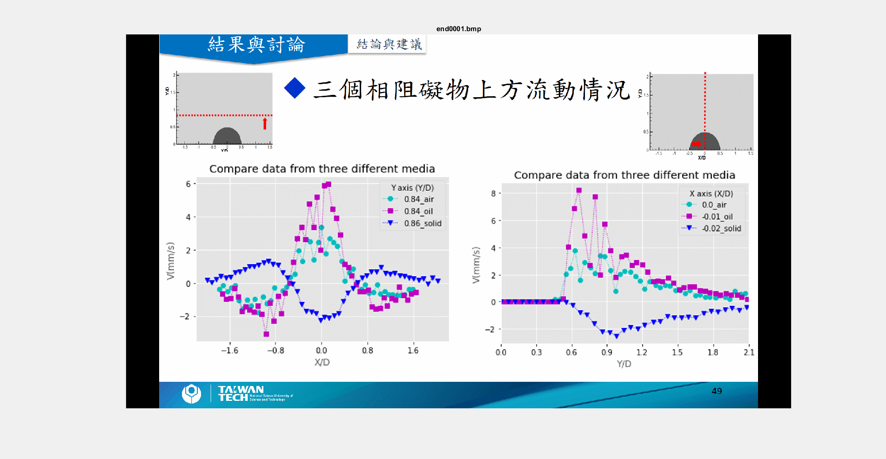
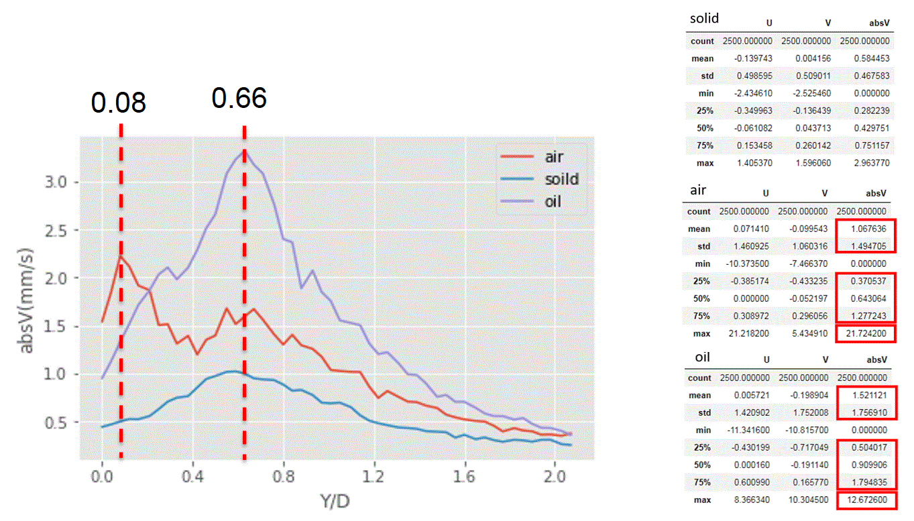
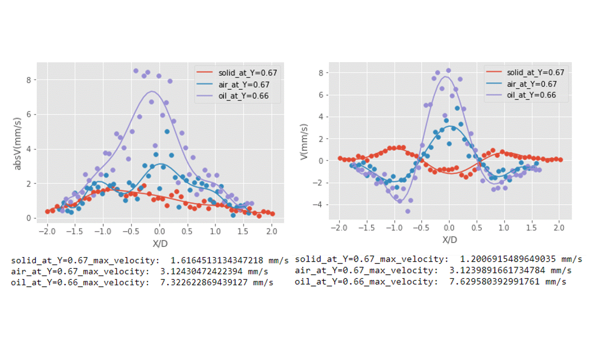
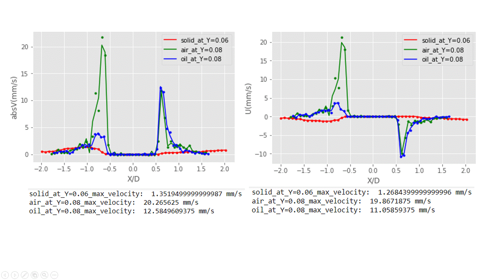

可以發現固體所產生的趨勢與其於兩者相反，更進一步我們將三個相的資料疊在一起觀察。

更清楚的觀察到固體與其於兩者的不同，且氣體阻礙物左右兩側的速度並不是很對稱，而液體相對來說對稱很多我們認為它較為穩定，緊接著我們也發現氣體所產生的速度梯度很大，更進一步我們將所有資料點的各特徵取出觀察。

從右表各點資料，可以很明確的看出在所有數值(平均值、最大最小以及各位數)固體所產生的速度遠不及其於兩者，且我們發現氣體僅有最大值高於液體，其於數值皆以液體最為快，因此我們將所有點資料Y軸上點資料加起來平均繪圖如左圖，很明顯的發現氣體僅在靠近壁邊有最快的速度其餘位置皆以液體最快，最後我們將這兩個位置的X座標取出繪圖。


這個結果讓我們更確信氣體位於壁邊有較快的速度。
結論
1. 成功於微流體裝置中置入氣體、液體及固體，成功誘發聲射流渦旋，且於結果發現液相及氣相所產生的聲射流渦旋現象較為一致，由於液相與氣相有相同的滑移邊界特性，我們認為影響聲射流流動形式以滑移邊界特性高於不可壓縮特性。
2. 透過微銑削技術製作出微流體裝置模具，並且克服微銑削帶來的兩個限制，成功改善微流體裝置表面粗糙度減少拍攝時的背景雜訊，以及成功製作出含有直角結構的微流體裝置。
3. 完成同步光源以及相機的實驗架設，進而達到PIV的拍攝模式，大大的降低影相對之間的時間間隔，以致於在PTV分析下獲得更好的有效向量。
4. 利用視流法觀察發現在較低頻率下誘發的聲射流渦旋趨勢，以氣體最大其次是液體而固體所誘發的渦旋趨勢最小。
5. 針對氣體、液體及固體阻礙物在高頻率下所誘發之聲射流渦旋進一步定量的分析，以最大絕對速度而言氣體(21 mm/s)大於液體(12 mm/s)而固體最小(2 mm/s)，由於氣泡產生之聲射流較集中，僅在阻礙物左右有較大的瞬時絕對速度，透過我們的結果絕大多數的情況下液體所誘發的速度大於氣體，以多項式迴歸分析速度剖面資料則發現位於 Y/D=0.08附近氣泡有最快的絕對速度其值為20 mm/s，而Y/D=0.66液滴則有最快的絕對速度其值為7 mm/s。
參考文獻
[1] B. R. Lutz, J. Chen, and D. T. Schwartz, "Hydrodynamic tweezers: 1. Noncontact trapping of single cells using steady streaming microeddies," Analytical chemistry, vol. 78, pp. 5429-5435, 2006.
[2] V. H. Lieu, T. A. House, and D. T. Schwartz, "Hydrodynamic tweezers: impact of design geometry on flow and microparticle trapping," Anal Chem, vol. 84, pp. 1963-8, Feb 21 2012.
[3] P. H. Huang, N. Nama, Z. Mao, P. Li, J. Rufo, Y. Chen, et al., "A reliable and programmable acoustofluidic pump powered by oscillating sharp-edge structures," Lab Chip, vol. 14, pp. 4319-23, Nov 21 2014.
[4] P. H. Huang, Y. Xie, D. Ahmed, J. Rufo, N. Nama, Y. Chen, et al., "An acoustofluidic micromixer based on oscillating sidewall sharp-edges," Lab Chip, vol. 13, pp. 3847-52, Oct 7 2013.
[5] C. Wang, S. V. Jalikop, and S. Hilgenfeldt, "Efficient manipulation of microparticles in bubble streaming flows," Biomicrofluidics, vol. 6, pp. 12801-1280111, Mar 2012.
[6] J. Collis, R. Manasseh, P. Liovic, P. Tho, A. Ooi, K. Petkovic-Duran, et al., "Cavitation microstreaming and stress fields created by microbubbles," Ultrasonics, vol. 50, pp. 273-9, Feb 2010.
[7] Y. Xie, D. Ahmed, M. I. Lapsley, S. C. Lin, A. A. Nawaz, L. Wang, et al., "Single-shot characterization of enzymatic reaction constants Km and kcat by an acoustic-driven, bubble-based fast micromixer," Anal Chem, vol. 84, pp. 7495-501, Sep 4 2012.
[8] D. Ahmed, X. Mao, J. Shi, B. K. Juluri, and T. J. Huang, "A millisecond micromixer via single-bubble-based acoustic streaming," Lab Chip, vol. 9, pp. 2738-41, Sep 21 2009.
[9] P. Marmottant, J. P. Raven, H. Gardeniers, J. G. Bomer, and S. Hilgenfeldt, "Microfluidics with ultrasound-driven bubbles," Journal of Fluid Mechanics, vol. 568, p. 109, 2006.
[10] D. Ahmed, X. Mao, B. K. Juluri, and T. J. Huang, "A fast microfluidic mixer based on acoustically driven sidewall-trapped microbubbles," Microfluidics and Nanofluidics, vol. 7, pp. 727-731, 2009.
[11] A. Volk, M. Rossi, C. J. Kahler, S. Hilgenfeldt, and A. Marin, "Growth control of sessile microbubbles in PDMS devices," Lab Chip, vol. 15, pp. 4607-13, Dec 21 2015.
[12] Y. Chen, Z. Fang, B. Merritt, D. Strack, J. Xu, and S. Lee, "Onset of particle trapping and release via acoustic bubbles," Lab Chip, vol. 16, pp. 3024-32, Aug 2 2016.
[13] A. Karimi, S. Yazdi, and A. M. Ardekani, "Hydrodynamic mechanisms of cell and particle trapping in microfluidics," Biomicrofluidics, vol. 7, p. 21501, Apr 5 2013.
[14] A. K. Prasad, "Particle image velocimetry," CURRENT SCIENCE-BANGALORE-, vol. 79, pp. 51-60, 2000.
[15] R. Lindken, M. Rossi, S. Grosse, and J. Westerweel, "Micro-Particle Image Velocimetry (microPIV): recent developments, applications, and guidelines," Lab Chip, vol. 9, pp. 2551-67, Sep 7 2009.
[16] M. Nabavi, M. H. K. Siddiqui, and J. Dargahi, "Simultaneous measurement of acoustic and streaming velocities using synchronized PIV technique," Measurement Science and Technology, vol. 18, pp. 1811-1817, 2007.
[17] M. Nabavi, M. H. K. Siddiqui, and J. Dargahi, "Experimental investigation of the formation of acoustic streaming in a rectangular enclosure using a synchronized PIV technique," Measurement Science and Technology, vol. 19, p. 065405, 2008.
[18] P. Ruhnau, C. Guetter, T. Putze, and C. Schnörr, "A variational approach for particle tracking velocimetry," Measurement Science and Technology, vol. 16, pp. 1449-1458, 2005.
[19] 洪逸杰著, "應用多光譜三維微粒循跡測速儀於具穩態射流之微流體裝置之三維 流場量測 Measurement of the Three-Dimensional Flow Field of a Steady-Streaming Microfluidic Device Using Multi- Spectra Three-Dimensional Micro-Particle Tracking Velocimetry," 台灣科技大學機械工程系學位論文, pp. 1-255, 2016.
[20] M. Wiklund, R. Green, and M. Ohlin, "Acoustofluidics 14: Applications of acoustic streaming in microfluidic devices," Lab Chip, vol. 12, pp. 2438-51, Jul 21 2012.
[21] S. S. Sadhal, "Acoustofluidics 15: streaming with sound waves interacting with solid particles," Lab Chip, vol. 12, pp. 2600-11, Aug 7 2012.
[22] S. S. Sadhal, "Acoustofluidics 16: acoustics streaming near liquid-gas interfaces: drops and bubbles," Lab Chip, vol. 12, pp. 2771-81, Aug 21 2012.
[23] Y. C. Lei, W. H. Tien, J. Duncan, M. Paul, N. Ponchaut, C. Mouton, et al., "A vision-based hybrid particle tracking velocimetry (PTV) technique using a modified cascade correlation peak-finding method," Experiments in Fluids, vol. 53, pp. 1251-1268, 2012.
[24] P. Tho, R. Manasseh, and A. Ooi, "Cavitation microstreaming patterns in single and multiple bubble systems," Journal of Fluid Mechanics, vol. 576, p. 191, 2007.
[25] A. Marin, M. Rossi, B. Rallabandi, C. Wang, S. Hilgenfeldt, and C. J. Kähler, "Three-Dimensional Phenomena in Microbubble Acoustic Streaming," Physical Review Applied, vol. 3, 2015.
[26] 盧信甫, "固體屏障、液滴以及氣泡誘發之聲射流場可視化觀察Visualization of Acoustic Streaming Flow Patterns Induced by Solid, Liquid and Bubble Obstructions," 中華民國航空太空學會, 2017.

{kind=link}
{kind=link}
{kind=link}
{kind=link}
{kind=link}
{kind=link}
{kind=link}
{kind=link}
{kind=link}
{kind=link}